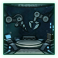
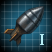
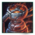
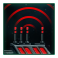
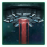
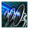
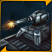
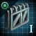

Starbase
Starbases are upgradeable military installations that establish and secure ownership of star systems.
Mechanics
Construction
Constructing a starbase requires first fully surveying the desired system.
The build cost is  100 alloys if Mechanical shipset or
100 alloys if Mechanical shipset or  50 alloys and
50 alloys and  175 food if using Biological shipset, and an additional
175 food if using Biological shipset, and an additional  influence cost on top of that.
influence cost on top of that.
The influence cost is a base of 75, multiplied by the number of hyperlane jumps, including bypasses, between the target systems and the empire's closest owned system. This is reduced by the  Slingshot to the Stars origin, which reduces the distance multiplier by 75%. For example, an adjacent system (1 jump) costs 75 influence, a system 2 jumps away costs 150 influence, or 94 influence with Slingshot to the Stars. Other modifiers to the total influence cost can be found below.
Slingshot to the Stars origin, which reduces the distance multiplier by 75%. For example, an adjacent system (1 jump) costs 75 influence, a system 2 jumps away costs 150 influence, or 94 influence with Slingshot to the Stars. Other modifiers to the total influence cost can be found below.
| Starbase influence cost | |
|---|---|
| Source | Effect |
| −50% | |
| −40% | |
| −30% | |
| −20% | |
| −20% | |
| −10% | |
Once built, the starbase will appear orbiting the center point of the system. A starbase cannot be destroyed by any regular means; when a starbase is reduced to 0 hull points it is disabled, but not destroyed.
A starbase can be destroyed by:
- being dismantled by its owner during peacetime if it is of no more than outpost level (higher-level starbases will need to be downgraded first) and the system is not colonized.
- being reduced to 0 hull points, and it is belonging to or attacked by a Crisis faction.
- a star in the system of the starbase being cracked by a Star-Eater.
- its owner has been defeated in a war and the system isn't fully occupied or has claims upon it.
If a starbase is dismantled or destroyed, the system reverts to being neutral and unowned and can then be claimed by any empire. Stations in the system will become unowned and slowly lose health.
If a system has a colony, but no starbase, and there is no hostile fleet present nor the planet is occupied, a new outpost will be built at the start of the next month.
Upgrades
Besides the initial influence cost, upgrading the starbase to a higher level costs either alloys or a mixture of alloys and food. Apart from increasing the starbase's base potency and durability upgrades enable the construction of modules and buildings, each of which offer additional capabilities, and enable it to better contribute to your empire beyond its normal role of system control.
One such important module is the  Gun Battery, which adds two
Gun Battery, which adds two  Medium weapon slots directly to the starbase, and one extra defense platform capacity. An entire starbase outfitted with multiple becomes a wall of guns, useful for delaying early game fleet aggression and acting as a stopgap until your more powerful and mobile fleets can arrive.
Medium weapon slots directly to the starbase, and one extra defense platform capacity. An entire starbase outfitted with multiple becomes a wall of guns, useful for delaying early game fleet aggression and acting as a stopgap until your more powerful and mobile fleets can arrive.
Though it is not possible to design a starbase, its components will be auto-fitted with the latest advanced technology as soon as they are made available (at no additional cost to the owner).
Starbase capacity
The number of upgraded starbases that an empire can support without penalty is determined by the  Starbase Capacity. Every upgraded starbase exceeding that capacity adds
Starbase Capacity. Every upgraded starbase exceeding that capacity adds  25% upkeep for all starbases. Any penalty to upkeep also affects the upkeep of modules and buildings on starbases. Regardless of their level, each starbase above "outpost" level occupies only one capacity slot.
25% upkeep for all starbases. Any penalty to upkeep also affects the upkeep of modules and buildings on starbases. Regardless of their level, each starbase above "outpost" level occupies only one capacity slot.
The base  Starbase Capacity is 3. This is increased by 1 for every 10 owned systems, and can also be increased by the following:
Starbase Capacity is 3. This is increased by 1 for every 10 owned systems, and can also be increased by the following:
| Starbase capacity | |
|---|---|
| Source | Effect |
| +6 | |
| +5 | |
| +4 | |
| +4 | |
| +2 | |
| +2 | |
| +2 | |
| +2 | |
| +2 | |
| +2 | |
| +1 | |
If the need arises, an empire can always downgrade existing starbases back to outpost level to reduce the number of upgraded starbases to within the cap.
Warfare behavior
Systems with starbases above outpost level require 25 more  influence to claim. Additionally, those starbases grant a higher war-score if occupied successfully (10 occupation value). During war, an attacker must disable the enemy's starbase within the system in order to be able to seize control of any planets within said system. As starbases cannot be destroyed, this is achieved by reducing the
influence to claim. Additionally, those starbases grant a higher war-score if occupied successfully (10 occupation value). During war, an attacker must disable the enemy's starbase within the system in order to be able to seize control of any planets within said system. As starbases cannot be destroyed, this is achieved by reducing the  Hull points down to 0, disabling the starbase. The starbase will then remain incapacitated for a duration of
Hull points down to 0, disabling the starbase. The starbase will then remain incapacitated for a duration of  30 days (after the latest attack), during which time any military ships in close proximity to the starbase will be able to gain control over it. If control of the starbase is uncontested, it will enter a self-repair phase and then become operational again as soon as it regains
30 days (after the latest attack), during which time any military ships in close proximity to the starbase will be able to gain control over it. If control of the starbase is uncontested, it will enter a self-repair phase and then become operational again as soon as it regains  5% Hull points. When a starbase is disabled, control of the starbase will be assigned to its owner, the war participant with the strongest system claim, or the war participant with the nearest fleet, in that order.
5% Hull points. When a starbase is disabled, control of the starbase will be assigned to its owner, the war participant with the strongest system claim, or the war participant with the nearest fleet, in that order.
Occupied starbases are fully operational and can repair ships of the side that controls it, inhibit FTL for "enemy" ships, and all empire-wide bonuses will also be applied, including home territory modifiers. However, the buildings and modules cannot be changed, and the starbase cannot be upgraded or downgraded, although it can be returned to the owner. If a starbase is occupied all stations in the system will be taken over by the occupier. The Army Builder tab will also display all armies currently being recruited by its original owner.
It is worth noting that auto-upgrading a starbase can "gift" higher tech components to occupied starbases (including FTL inhibitors), while keeping their own more advanced components. They will stay equipped even if said starbase is reclaimed back, so repeated re-conquering might become harder for both sides.
Starbases have the following inherent bonuses, making their weapons stronger than those of ships and platforms:
 +50% Fire Rate
+50% Fire Rate +20% Weapons Range
+20% Weapons Range
After the  FTL Inhibition technology has been researched upgraded starbases will include an FTL inhibitor which prevents enemy ships from leaving the system via any hyperlane other than the one they arrived through until the starbase is disabled or occupied.
FTL Inhibition technology has been researched upgraded starbases will include an FTL inhibitor which prevents enemy ships from leaving the system via any hyperlane other than the one they arrived through until the starbase is disabled or occupied.
Level
A starbase is auto-fitted with the latest components as soon as they are available to the empire. This is done automatically and has no additional cost for the empire - as such this also does not affect a starbase's level upgrade cost.
The weapon slots are fitted with the most effective kinetic and energy weapons (though not necessarily by equal division). The utility slots are divided equally between  shield and
shield and  armor components (auto-fitting does not add hull components here), while the
armor components (auto-fitting does not add hull components here), while the  auxiliary slot uses standard auto-fitting of a shield capacitor or auxiliary fire-control (whatever is available in order of priority).
auxiliary slot uses standard auto-fitting of a shield capacitor or auxiliary fire-control (whatever is available in order of priority).
Upgrading a starbase requires the technology of the same name and can only be done in sequential order - meaning that upgrading a basic outpost to a citadel requires going through every level in between to get to the desired level. Downgrading a starbase reduces it to outpost level immediately and removes all buildings and modules. Defense platforms will remain even if above the outpost's capacity. Any resources invested into the starbase prior to downgrading will not be refunded.
Starting from starport level, all starbases have an  FTL inhibitor if the
FTL inhibitor if the  FTL Inhibition technology has been researched.
FTL Inhibition technology has been researched.
Note: The table lists the base properties of each starbase level. The actual values themselves will differ due to one's progress in-game (technology, tradition, and etc.), existing modifiers (if any) as well as individual starbase composition (buildings, modules, and etc.).


Modules
Depending on its level a starbase can support up to 6 modules, which are visible on the starbase. It is possible to construct multiple modules of the same type and the starbase will be described in the outliner depending on the majority module type. Each module takes  180 days to construct.
180 days to construct.
| Module | Cost | Upkeep | Effects | Requirements | DLC |
|---|---|---|---|---|---|
Anchorage Fleet anchorages are necessary to support the growth of our navy. |
|
||||
 Ancient Rampart Defense platforms are a cost effective way to ensure our safety, but they need to be monitored from an operation center. Fortifying our Starbase to ensure its survivability in the event of an attack, and maximizing our capacity to network independent orbital defenses would give us more time to dispatch reinforcements. |
|
|
|||
 Detection Array Adds high-powered suite of external sensors, capable of detecting cloaked fleets. |
|||||
 Vivarium Tank External tanks partially exposed to space that can safely house captured Space Fauna. |
|
Fleet modules
Fleet modules allow the starbase to construct utility ships as well as either military ships or space fauna. Multiple fleet modules may be constructed to produce multiple ships or space fauna in parallel but only one type of fleet module can be constructed on a starbase. Both fleet modules 50  alloys and have an
alloys and have an  energy upkeep of 1 unit per month.
energy upkeep of 1 unit per month.
| Module | Effects | Requirements |
|---|---|---|
|
||
 Beastport Beastports are specialized facilities that can clone Space Fauna and construct Utility Ships. |
|
Defenses
Defense modules cost 120  Alloys, install additional weapons and increase the starbase's
Alloys, install additional weapons and increase the starbase's  Health and
Health and  Armor by +10% each. All of them have an upkeep of 1
Armor by +10% each. All of them have an upkeep of 1  Energy.
Energy.
| Module | Weapons added | Required technology |
|---|---|---|
 Gun Battery Adds two medium-size weapon slots to the Starbase. |
||
Torpedo Battery Adds two torpedo weapon slots to the Starbase. |
 Space Torpedoes | |
 Hangar Bay Adds a hangar for strike craft to the Starbase. |
Economic support
| Module | Cost | Upkeep | Effects | Requirements | DLC |
|---|---|---|---|---|---|
Trading Hub A civilian docking area where merchants and traders can conduct business. |
|||||
 Solar Panel Network Advances in solar panel technology could offset the operating costs of our starbases. |
|
||||
 Astro-Mining Bay Hangars and warehouses to support resource collecting operations in the system. |
|
Buildings
Depending on its level a starbase can support up to 4 buildings. Unlike modules, it is only possible to construct a single building of any type. Building cost is reduced by −25% by the  Modular Engineering technology. Many starbase buildings can also be built on orbital rings.
Modular Engineering technology. Many starbase buildings can also be built on orbital rings.


Resource buildings
The following starbase buildings affect resource production or storage. Many of them can only be built if the system contains a certain celestial object. They cannot be constructed on deep space citadels.
| Building | Time | Cost | Upkeep | Effects | Requirements | DLC | ||
|---|---|---|---|---|---|---|---|---|

|
Hydroponics Bay By dedicating a section of this Starbase to Hydroponic farming, the station will be able to feed itself and even export excess produce to other systems.
|
|||||||

|
Stellar Observatory By building a specialized science facilities dedicated to studying stellar objects, our empire will surely be able to see improvements in our understanding.
|
|
||||||

|
Nebula Refinery By processing the dust clouds of a nebula, we are able to refine and extract valuable minerals.
|
|
|
|||||

|
Ice Mining Station This system is a plentiful source of unexploited ice. By setting up a harvesting station here, we could see it put to better use, creating habitable oceans for our kind.
|
|
|
|||||

|
Dimensional Shrine Outside the known universe there are pathways to other worlds, and places where those connections are subtly made. This is where we build the holiest of our temples.
|
|
||||||

|
Nanite Harvester Uncovers a Size 0.1 Nanites deposit on every rocky Planet, Moon and Asteroid that does not have any Research Station Deposits.
|
|||||||
 |
Pyroclastic Resonator Thermal resonators that can increase the energy output of any molten world in a star system. Energy Credits production scales with the number of Molten Worlds in the system.
|
|
Module support buildings
The following buildings enhance the capabilities of starbase modules. They require at least one of the said modules to be either constructed or in the build queue but are not automatically removed if the last required module is removed or replaced.


Defenses
The following buildings improve the starbase's defense capabilities by either boosting the starbases or allied fleets or inflicting penalties upon enemy fleets.


Aura emitters
Aura emitters give a bonus to all allies ships in the system or a penalty to each enemy ship. These buildings cannot be constructed on deep space citadels but their effects can be added through core design components.
| Building | Time | Cost | Upkeep | Effects | Requirements | ||
|---|---|---|---|---|---|---|---|
 |
Communications Jammer These powerful jammers interfere with enemy ship-to-ship communications, making it difficult to coordinate fleet movements.
|
|
Max 1 per system | ||||
 |
Disruption Field Generator Generates localized fields of agitated subatomic particles around hostile ships in the system, significantly reducing the effectiveness of their shields.
|
Max 1 per system | |||||

|
Command Center All system defense efforts are coordinated from this large facility, buried deep within the hull of the Starbase. Map arrays and 3D projections track all space traffic passing through the system at any given time.
|
||||||

|
Hyperlane Registrar Assists friendly ships with FTL travel in the system by identifying ideal conditions for hyperlane entry, and optimizing projected travel routes.
|
|
Origin buildings
The following starbase buildings are only available to empires with a certain origin. They cannot be constructed on deep space citadels but the Offspring Outlook can be added as a design component.


{kind=link}
{kind=link}
{kind=link}
{kind=link}
{kind=link}
{kind=link}
{kind=link}
{kind=link}
{kind=link}
{kind=link}
{kind=link}
{kind=link}
{kind=link}
{kind=link}
{kind=link}
Enclave buildings
The following starbase buildings require an agreement with an enclave and/or the enclave's presence in the system. They cannot be constructed on orbital rings. Most enclave buildings gain a bonus if the  Advanced Xenostudies resolution (3) is passed.
Advanced Xenostudies resolution (3) is passed.
| Building | Time | Cost | Upkeep | Effects | Requirements | DLC | |||
|---|---|---|---|---|---|---|---|---|---|

|
Curator Think Tank By constructing a research facility entirely focused on learning from, and cooperating with, the Curators, we are able to make significant contributions to our scientific progress.
|
|
|||||||
| Shroud Beacon A psionic Beacon used to spawn a Shroud Tunnel in system. While the Shroud Beacon may be dismantled (or destroyed), the Tunnel itself cannot be removed.
|
|
|
|||||||

|
Art College This zero-g Art College, operated in conjunction with the nearby Artisan Enclave, celebrates the beauty of outer space in the works produced by its talented students.
|
|
|||||||

|
Trader Proxy Office The Trader Enclaves enjoy special privileges on the Galactic Market, which can also benefit us.
|
|
|||||||

|
Salvage Works This bustling annex equips our engineering teams with a cornucopia of tools and spare parts, facilitating closer collaboration with the nearby Salvager Enclave.
|
|
|
||||||

|
Mercenary Garrison A collection of barracks hosting military contractors. These grizzled veterans organize regular drills for the rest of the crew, and stand ready to defend the station - as long as we pay them.
|
Agreement with a Mercenary enclave | |||||||

|
Psionic Projector The Psionic Projector establishes a fixed conduit for projected psionic energy, allowing a starbase to emanate a Psionic Aura.
|
Agreement with the Shroudwalkers enclave |
Storm array buildings
|
|
Available only with the Cosmic Storms DLC enabled. |
Storm array buildings are unlocked by the  Storm Manipulation technology and are used to attract or repeal cosmic storms to and from the system. A starbase can only have one storm array building constructed. They cannot be constructed on orbital rings. They cannot be constructed if the system already contains the opposite effect on any planet.
Storm Manipulation technology and are used to attract or repeal cosmic storms to and from the system. A starbase can only have one storm array building constructed. They cannot be constructed on orbital rings. They cannot be constructed if the system already contains the opposite effect on any planet.
| Building | Time | Cost | Upkeep | Effects | |
|---|---|---|---|---|---|

|
Storm Attraction Array This component allows us to manipulate local gravitational conditions to attract storms from the depths of space.
|
| |||

|
Storm Repulsion Array This array of powerful lasers is able to create pockets of highly charged magnetic particles, creating a natural repellent force against cosmic storms.
|
80% Storm repulsion |
Precursor buildings
|
|
Available only with the Ancient Relics DLC enabled. |
The following starbase buildings can only be constructed after completing the special project to delve into the secrets of one of the precursors and researching a unique technology. They cannot be constructed on orbital rings, except for the Hyperlane Detailer. Precursor buildings gain a bonus with the  Archaeo-Engineers ascension perk.
Archaeo-Engineers ascension perk.
| Building | Time | Cost | Upkeep | Effects | Requirements | ||
|---|---|---|---|---|---|---|---|

|
Cybrex Mining Hub To build their ring world, the Cybrex relied on highly efficient mining drones to survey and harvest orbital resources. Cybrex-made memory chips and sensors could outfit our own mining drones, so that we might put their millennia old algorithms to good use.
|
||||||

|
Irassian Naval Yards The Irassian astronaval tradition was unmatched in their time. Their shipyards produced a constant stream of ships for their navy and merchant fleets, which would ultimately be their downfall. With so many ships, and such a high reliance on them, the Irassians were powerless to quarantine the disease that would claim their empire.
|
|
|||||

|
Yuht Astronomical Interferometer The Yuht were a paradoxical society, obsessed with the idea of finding other sentient species, yet refusing to accept that they were not alone. They were so focused on disproving any claim of alien life, that their bias found a way into their technology. However, with the proper modifications and calibrations, we could certainly fix their powerful detection arrays.
|
|
|
||||

|
Zroni Storm Caster Zro is a fascinating element, prone to chaotic bursts of energy. We believe that with the right artifacts, we could use it to fuel spatial storms over entire solar systems.
|
|
*actual effect is -0.1% daily hull to enemy ships. |
||||
 |
Hyperlane Detailer |
{kind=link}
Defenses
{kind=link}
Because starbases are vital targets during warfare, an empire must ensure that they can maintain control over their own starbases to prevent their opponents from seizing control of the system. Investing resources into arming a starbase can allow it to function as a strong deterrent to enemy invasions, a powerful supporting power during a fleet battle in the system, and a starbase that is heavily armed enough can potentially even repel an entire enemy fleet by itself. Successfully maintaining control over every single starbase in the empire is by itself enough to allow an empire to end the war through a status-quo without losing any systems, earning them a defensive victory.
The basic starbase defenses are turrets. Starbase turrets are always of  medium size. The number of slots increases with each starbase level and more can be added by building
medium size. The number of slots increases with each starbase level and more can be added by building  Gun Batteries. The type of weapon cannot be chosen; slots will be filled by the highest possible tier of an automatically chosen type of weapon. The only way to diversify the armaments is to add
Gun Batteries. The type of weapon cannot be chosen; slots will be filled by the highest possible tier of an automatically chosen type of weapon. The only way to diversify the armaments is to add  guided weapons by building Missile Batteries or
guided weapons by building Missile Batteries or  strikecraft by building
strikecraft by building  Hangar Bays. It is advised to reinforce critical starbases with defense platforms and to not rely only on turrets.
Hangar Bays. It is advised to reinforce critical starbases with defense platforms and to not rely only on turrets.
Defense platforms are smaller military stations that are deployed around the starbase and act as additional weapons platforms, adding their firepower to the starbases while diverting enemy fire. Unlike starbases, their loadout can be customized in the ship designer, allowing for several designs to be built based on the different needs on each front and to be upgraded based on these designs. However, unlike ships, platforms cannot be retrofitted to a different design once built, necessitating dismantling and completely rebuilding in order to change designs. It also renders any transferred platforms non-upgradable.
When compared with ships, platforms are situated between destroyer and cruiser classes, their hull and armament slightly better than the former, while their armor potential is equivalent to the latter. However, due to them having no  evasion whatsoever, individual platforms are still very vulnerable, and if strong, sustainable firepower is a priority, it is wiser to put more turrets on the base itself and only add in defense platforms once the starbases available armaments have been maxed out.
evasion whatsoever, individual platforms are still very vulnerable, and if strong, sustainable firepower is a priority, it is wiser to put more turrets on the base itself and only add in defense platforms once the starbases available armaments have been maxed out.
Each starbase has a base capacity of 3 defense platforms. It can be increased by the following:
 With Apocalypse DLC, a fully upgraded Citadel can also support an Ion Cannon, a more powerful platform type with a single titan weapon. It takes up 8 defense platform capacity slots.
With Apocalypse DLC, a fully upgraded Citadel can also support an Ion Cannon, a more powerful platform type with a single titan weapon. It takes up 8 defense platform capacity slots.
Defense platform modifiers
Defense platforms have  +30% Weapons Range. Additional modifiers which affect various defense platform parameters are summarized below. Note that general modifiers to ship hull, armor, shield, and damage also apply to defense platforms.
+30% Weapons Range. Additional modifiers which affect various defense platform parameters are summarized below. Note that general modifiers to ship hull, armor, shield, and damage also apply to defense platforms.
| Damage | |
|---|---|
| +100% | |
| +75% | |
| +50% | |
| +50% | |
| +33% | |
| +25% | |
| +25% | |
| +10% |  Synchronized Firing Patterns |
| Hull points | |
|---|---|
| +100% | |
| +75% | |
| +50% | |
| +50% | |
| +33% | |
| +25% | |
| +10% | Fortified Core Layers |
| +500 |  Improved Structural Integrity |
| Build cost | |
|---|---|
| −33% | |
| −25% | |
| −15% | |
| +25% |
| Upkeep | |
|---|---|
| −25% | |
| +25% |
References
| Exploration | Exploration • FTL • Unique systems • L-Cluster • Pre-FTL species • Fallen empire • Spaceborne aliens • Enclaves • Guardians • Marauders • Caravaneers |
| Celestial bodies | Celestial body • Colonization • Planetary features • Planet modifiers |
| Discovery | Discovery • Anomaly • Archaeological site • Astral rift • Relics • Collection |
| Species | Species • Pop modification • Biological traits • Machine traits • Population • Species rights • Ethics |
| Leaders | Leader • Common leader traits • Commander traits • Official traits • Scientist traits • Paragons |
| Governance | Empire • Origin • Government • Civics • Council • Policies • Edicts • Factions • Traditions • Ascension perks • Ambition • Situations |
| Economy | Resources • Planetary management • Districts • Jobs • Designation • Trade • Megastructures • Waystation |
| Buildings | Planet capital • Common buildings • Planet unique • Empire unique • Holdings |
| Ships | Ship • Arkship • Ship designer • Core components • Weapon components • Utility components • Mutations • Offensive mutations |
| Technology | Technology • Physics research • Society research • Engineering research |
| Diplomacy | Diplomacy • Relations • Galactic community • Federations • Subject empires • Intelligence • Contracts • AI personalities |
| Warfare | Warfare • Space warfare • Land warfare • Starbase • Crisis |
| Others | Events • The Shroud • Preset empires • AI players • Stat modifiers • Console commands • Easter eggs |